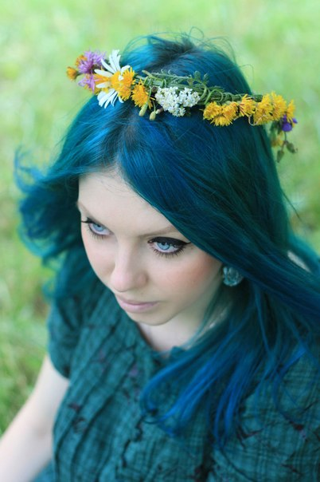
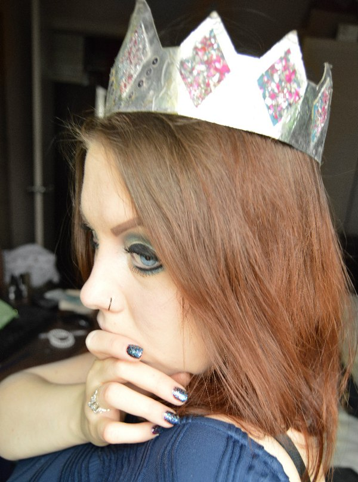

Запрашиваемая страница отсутствует, удалена или перемещена. Если Вы попали сюда, скопировав либо вручную вписав URL в адресную строку, проверьте правильность ввода, попутно любуясь некоторыми избранными иконами совершеннейшего Создания всех времён и народов.

